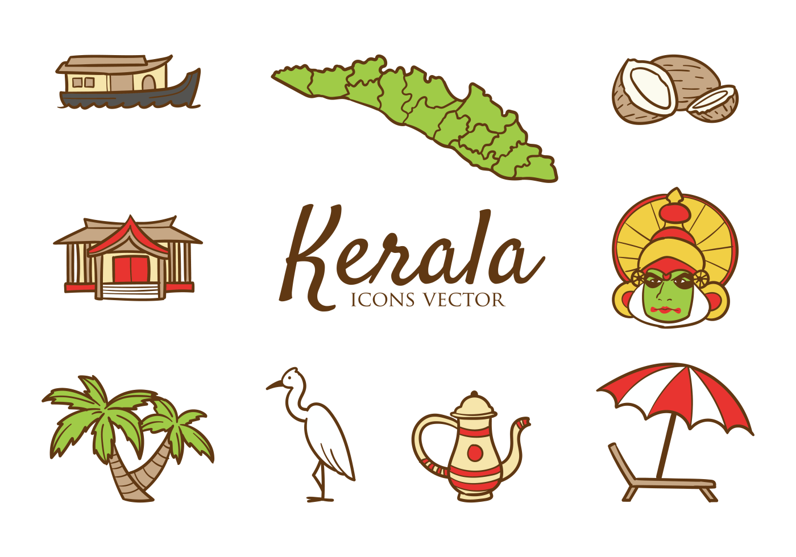
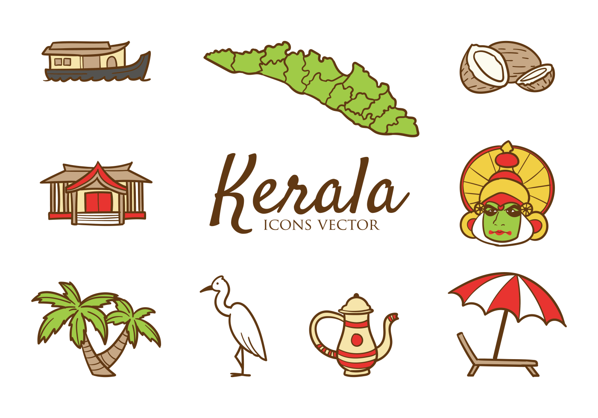

House boat

munnar hills
kerala-icons-vector

Water falls
House boat
munnar hills
kerala-icons-vector
Water falls
The Chera dynasty was the first prominent kingdom based in Kerala. The Ay kingdom in the deep south and the Ezhimala kingdom in the north formed the other kingdoms in the early years of the Common Era (CE). The region had been a prominent spice exporter since 3000 BCE.[20] The region's prominence in trade was noted in the works of Pliny as well as the Periplus around 100 CE. In the 15th century, the spice trade attracted Portuguese traders to Kerala, and paved the way for European colonisation of India. At the time of Indian independence movement in the early 20th century, there were two major princely states in Kerala: Travancore and Cochin.